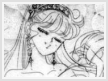
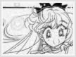

Entity » The Extras» Incarnation of Goddess Venus Warning: This page contains spoilers if you haven't read the manga. Proceed at your own risk. The former identities of all of the senshi were princesses of their respective planets, as shown in the manga. However, Minako was already aware that she was Princess Venus in the Sailor V manga. When Artemis informed her of her former identity, she found it hard to believe that she was a princess, for she thought she was just a normal teenager. In the beginning, Artemis was doubtful that Minako was actually the incarnation of the Goddess Venus, as Luna did with Usagi being Sailor Moon. Since Minako is somewhat un-princess-like, he wondered if this could really be the product of the incarnation. He frequently complained and questioned to "the Boss" of Minako's abilities, saying that she is hard to train. Occasionally, Minako herself would have doubts about being a senshi. Then, ironically, Artemis would remark that she displayed certain characteristics that resemble the goddess. Once, he glanced at Minako-chan while she took a bath and saw her notable beauty, he noticed that she was becoming more and more reminiscent of the goddess herself. Aside from her guardian Artemis, Princess Venus also had a Guardian fairy, as with the other senshi. The fairies' first appearance was in Act 41. They requested that the senshi ask for power from their palaces for the Holy Grail in order to destroy Neherenia and Zirconia. |